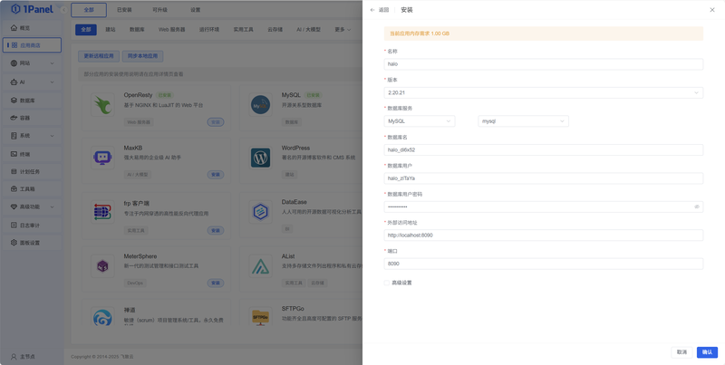
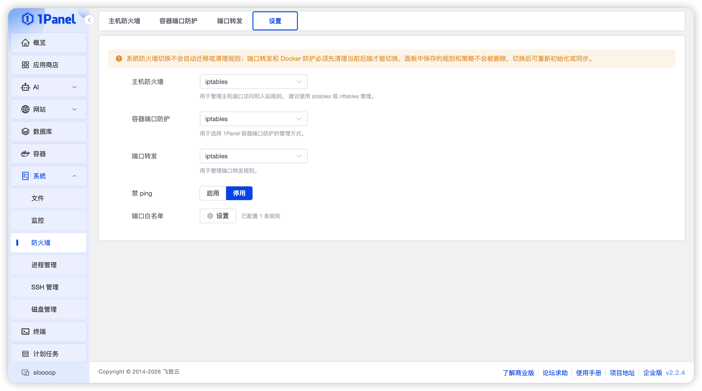

1Panel 快问快答：装面板前必须知道的九件事
从安装门槛、应用商店、建站体验到防火墙坑点，九个高频问题一次性说透 1Panel 到底值不值得装。
整理一篇关于 1Panel 的快问快答——如果你在纠结要不要装这个 Linux 服务器管理面板，这九组问答应该能帮你省不少翻文档的时间。
1Panel 是什么？谁在用它？
1Panel 是一个现代化的 Linux 服务器运维管理面板，它的官网上对产品定位说得很清楚——核心目标是让服务器上装应用、建网站、管数据库这些事不用再全靠命令行敲。它把 Docker、Nginx、防火墙、计划任务这些零散工具的操作统一收进了一个界面里，目标用户挺广泛：自己买云服务器建站的个人站长、跑微服务的开发者、甚至一些小团队用它来管测试环境也不少见。
装起来麻烦吗？最低什么配置能跑？
不麻烦，从官方下载拿一键安装脚本，把面板本体和 Docker 一起装完，全程基本就是复制粘贴一条命令的事。硬件门槛也不高，官方说可用内存 1GB 以上就能跑，不过要注意——如果你后面装应用多了、拉镜像频繁了，低内存机器很容易被 OOM 杀掉，建议起步就用 2GB 内存比较稳。国产操作系统（麒麟、统信）也在支持列表里，走的是 Debian 或 RedHat 系的安装流程，不用改脚本。
装完面板打不开怎么办？按什么顺序查？
这个是高频问题，排查从外到内三层来：先确认你输的地址和端口对不对（忘了就 SSH 上去跑 1pctl user-info 看），再查云厂商控制台的安全组有没有放行对应端口——很多人装完面板就忘了这一层，系统防火墙开了但云安全组没开，外面一样连不上。最后跑 1pctl status 看服务本身起来了没有，没起来就 1pctl restart。这三步走下来，九成以上的"装完打不开"都能定位。
它的应用商店到底能装啥？
应用商店分了好几大类，比较常见的建站类有 WordPress、Halo、Typecho，数据库类 MySQL、PostgreSQL、Redis 都有，还有各种中间件、开发工具，加起来一百多项。装完之后"已安装"列表就是你的应用台帐，每行有状态提示——已停止的先看容器日志，启动中的再查端口。日常升级、改参数、备份、卸载都在这一页搞定，升级的时候面板会拉新镜像重建容器，数据卷会保留，不过生产环境建议升级前先手动点一次备份，留个回退点。

建站体验怎么样？真的一键吗？
建站分两种路：一种是先从应用商店装 WordPress、Halo 这类建站程序，然后在网站菜单里用"一键部署"绑定域名，这条链路是最顺滑的，不用你手动配 Nginx 反向代理。另一种是纯静态网站或自定义程序，面板也提供了反向代理、静态站点、PHP 站点等几种创建方式。装完应用之后面板会自动维护好容器到域名的转发关系，证书申请也集成进去了，HTTPS 配置基本点几下就完事。
安全方面有什么特别要注意的？
有一个反直觉的坑必须说：系统防火墙明明没放行 3306，公网却连得上容器里的 MySQL。原因是 Docker 的端口发布走的是独立转发链路，请求在到达系统防火墙之前就被转进容器了——这不是 1Panel 的问题，是 Docker 在所有平台上的标准行为，后来去1panel文档翻了一下才弄明白——1Panel 为此专门做了"Docker 端口防护"这一层，需要手动启用，选好后端（iptables 或 nftables）之后，面板会基于容器端口自动维护来源限制策略。另外面板的安全入口、密码、两步验证三件套，任何一个忘了都能通过 1pctl 命令行工具自救，不用重装。

进程守护和定时备份靠不靠谱？
进程守护基于 Supervisor，Linux 世界最老牌的进程守护工具，面板里装好初始化之后，就能把自己跑的脚本、爬虫、队列消费者丢进去——崩了自动拉起，日志统一收集。它和计划任务的分工要分清：常驻进程用守护，周期动作用计划任务，别把常驻服务塞进计划任务定时拉起，间隔内的空窗和重复拉起都会出问题。定时备份方面，应用层面可以一键打包数据卷，数据库也有专门的备份恢复面板，配合计划任务做定时备份是生产环境的标准配置。
和宝塔比有什么不同？
两个面板的核心功能有重叠，但定位不太一样。1Panel 走的是 Docker-first 的路线，应用商店里的应用基本都以容器方式运行，隔离性更好，升级和迁移也方便；宝塔更偏向传统 LAMP/LNMP 栈，在 PHP 建站和国内生态这块耕耘得更早。界面风格上 1Panel 是现代化设计，深色主题，操作路径相对扁平；宝塔的功能更密集，上手门槛稍高但覆盖全面。如果你倾向容器化部署、或者在国内环境对中文版和国产系统支持有硬性需求，两个都值得看看，选顺手的就好。
免费吗？有哪些付费功能？
基础功能完全免费——面板本体、应用商店、网站管理、防火墙、进程守护这些日常用得到的都在免费版里。付费主要集中在一些企业级能力上，比如离线安装包、WAF 专业版、资产管理这类面向团队的功能。个人站长和小团队跑生产环境用免费版就够，真正需要企业级特性的再考虑付费也不迟。
最后一句
如果你需要一个能把服务器上 Docker、建站、数据库、安全管理这些事收进一个界面里、又不想全靠命令行敲的工具，1Panel 值得装——门槛不高、中文友好、容器化的底子对后续扩展很友好，装一台试试看，十分钟就能跑起来。